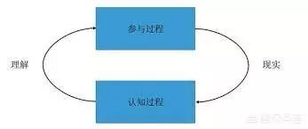

最近看到飞总在知识星球里推荐大家看一下索罗斯在中欧大学的演讲，说是很有意思，于是就花了点时间好好看了一下。索罗斯的演讲确实废话不多，逻辑也很清晰。演讲里的观点非常符合常理，但是从中可以推导出一些有趣的结论。
易错性和反身性
反身性这个概念其实一直都蛮有名的，尤其是在介绍索罗斯早年的书《金融炼金术》的时候，这个概念必然会被提及。那么这个概念到底是什么意思呢？
为了解释反身性，必须先要解释易错性。所谓的易错性，其实就是指人对世界的观察永远都会是片面的，有偏差的这一事实。他把这种现象叫做易错性。这种片面，偏差在纯科学的研究中相对来说比较少，因为科学是可以证伪的。可是在经济，人文，甚至商业的问题上，由于这些问题不可证伪，因此易错性就更为严重。
人对世界的观察片面有偏差本身并不是问题，问题是这种扭曲过的观察可以反过来影响到事情本身的发展，因为这种片面的观察会带来不恰当的后续反应。
比如说，我们通常会觉得吸毒人员比较容易犯罪，而这种偏见其实会导致吸毒人员真的更容易犯罪。再比如说，如果我们觉得政府不好，那这种偏见往往会导致政府真的变糟糕。
索罗斯把这种有人参与过的事情的“易错性”使得实际发生的事情进一步扭曲的现象叫做“反身性”。

并不是所有的有人参与的事情都会具有反身性的，往往只有当对一件事情的观察本身可以改变这件事情的时候，反身性才存在。比如“这是一个革命的时刻”这句判断句就是反身性的。它到底是不是真的，取决于说这句话的时候，这句话是不是能够鼓动起一群人起来造反。
具备反身性的事情其实肯定是有一个反馈机制的。如果这个反馈机制是把人的观点和实际情况越拉越远，则是正反馈，反之则是负反馈。
负反馈最终会导致事情导向平衡，这也是经济学里研究得非常多的一种情况，这种情况也相对来说更容易分析。
而正反馈则会自我强化，把人的观点和实际情况越拉越远。这必然是不可持续的，因为人终有一天会认识到现实和观点的分歧。而当分歧达到高潮的时候，往往会触发相反方向的正反馈。在金融市场中，泡沫的累积和破灭就是这样的正循环。
反身性对金融市场的意义
正是由于反身性，市场的价格总是扭曲地反应其下的基本面，而且失真的程度可能非常大，也可能存在很长的时间。从这一点来说，有效市场假说是站不住脚的。
近些年的研究热点“行为经济学”更多地研究了市场非平衡下的状态，索罗斯认为这个理论完全是基于反身性的，但是还是仅仅探索了这个现象的一半。行为经济学仅仅说明了人们的认知错误会导致金融资产定价的错误，但是它并没有说明金融资产的定价错误还会反过来影响金融资产的基本面。
启蒙谬误和后现代谬误
既然我们知道了由于人对世界的观察永远都有所谓的“易错性”，因此我们对这个世界的理解永远都不是完美的。然而人一旦发现一个知识是有用的，在反身性的正反馈作用下，就会倾向于有偏差地认为这个知识适用于无限多的地方，直到它被扩展的边界太大，以至于这个知识不再适用为止。当这个知识不再适用的时候，它就变成了谬误。索罗斯把这种谬误称为启蒙谬误。
启蒙谬误出现在很多地方，比如很多的数学模型在物理领域表现得非常好，于是人们就不断把这些理论拓展，进而用于经济学领域中。然而这些数学模型很多并不能解释市场，比如有效市场理论，就被证明无法非常好地解释金融市场。
索罗斯认为启蒙谬误的本质是人们没有意识到自己的认知能力是有局限的。在这个谬误中，人们天然地认为人有能力也应该不断地提高认知能力，追求真相。
然而在政治生活中，政客的目的发生了变化。他们的目的不是为了发现事实以及帮助别人发现事实，而是为了当选和继续掌权。因此他们往往选择操纵人们。而人们事实上也非常容易被操纵，因为大多数的人习惯了接受包装好的信息，也乐于接受那些付费的政治广告。
索罗斯把政治领域里这种过于强调操纵，而忽略认知的倾向称为后现代谬误。这种谬误忽略了客观事实的核心是无法被操纵的，它催生了一种不道德，不务实的政治态度。它可以被归纳如下：“如果我们发现现实是可以操纵的，为什么不直接操纵呢？根本不需要真理就可以了。”
索罗斯在这里反驳了这种观点，他说虽然现实可以被操纵，但是由于易错性，操纵的结果必然会偏离操纵者的意图。而如果要让这样的偏离最小化，就需要更好地理解现实。我个人觉得他这里的强掰有些牵强，操纵者操纵的结果就算偏离了当初的意图，也会有一个大致的方向，而且这也不妨碍操纵者自己理解现实以便更好地让被操纵者偏离现实。
索罗斯在这里举的例子是小布什攻打伊拉克最终并没有实现小布什自己的目标：实现美国霸权。事实上这次战争使得美国进一步丧失了影响力和权利。我个人觉得这里并不应该用反身性来解释。事实上我们很难判断这个结局是否是小布什当初的意图。
不过我还是认同索罗斯这里说的应该重视认知现实的观点。不管是个人还是社会，提升认知现实的能力永远是社会进步的大方向。
总之索罗斯的演讲还是蛮不错的，我把演讲稿的链接放在阅读原文那边了，有兴趣的可以自己读读看。